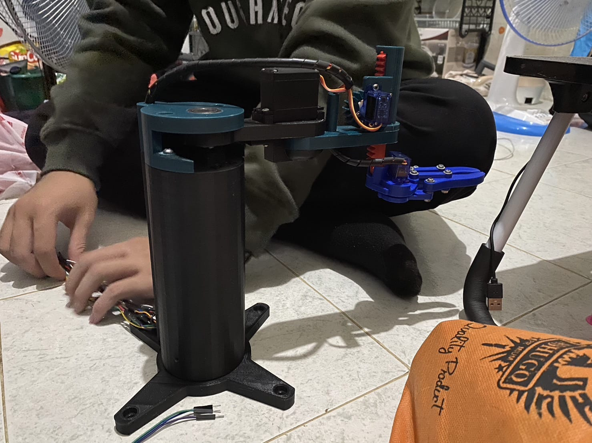
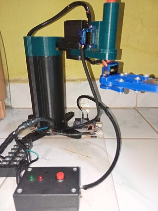
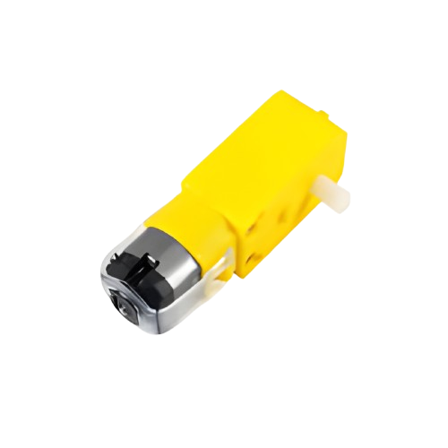
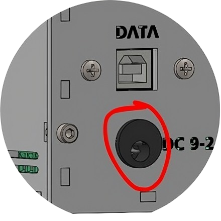
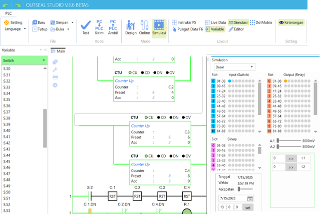

Scara Robot
First semester
Here we are required to make a mini scara robot, which can move an object from one point to another.

This time I got the role to design the electricity, connecting between servo motors on the scara using jumper cables.
Circuit Schematic
this tool uses 4 servo motors (mg996 & sg90), each of which requires a voltage of 5 volts from the power supply.
using arduino uno as microcontroler
For power, using a Type B USB cable connected to the laptop's USB port with a voltage of 5 volts, or also can use a 9-volt adapte
also using a push button as a start / stop in the circuit and equipped with an indicator light.
  <<<<<<< HEAD ======= >>>>>>> 0d003a61c73b0dd00762c7c3685b2becc49a7988the result
Second semester
CIM
(Computer Integrated Manufacturing)
This is a continuation of the previous semester. Connecting Scara, robot arm, and conveyor into one system. The way it works is that the ARM Robot loads the object to conveyor. Then the conveyor sorts the object based on its material. SCARA robot moves the object to the place according to the sorting result.
Wiring Diagram
this time I'm still working on the electrical part. This is a component of the components contained in this tool. This tool is controlled using two Arduinos, which are connected to each other with UART Communication.
On the conveyor, it uses a 12-volt DC motor whose speed can be controlled through the GUI. To adjust the speed, a motor driver L293D is used.
E18 - d80nk infrared sensor is used to detect the material at the starting point, also at the beginning of the conveyor. and to sort the material using a capacitive sensor.
The voltage source for all components comes from a 12v power supply.
then the voltage is reduced using a step down to match the input voltage (5v).
Installation of each scara servo pin data and robot arm on arduino input.
Arduino Box
the result
third semester
Mini Trainer Kit PLC
This semester I worked on the electrical part and helped in making the 3D design of the tool. We are required to make a PLC trainer kit but in a mini and compact form, with the aim of being easily carried everywhere by learners such as vocational school students or people who want to learn the basics of PLC.
Based on the Outseal Mega V2 PLC which has 25 input pins and 27 output pins.
This PLC accepts input voltage from a 9v to 24 v DC adapter..
 This PLC has own software, named “Outseal Studio” .
so besides learning about electricity, here I also started learning to make PLC ladder programs..
each pin on the PLC is connected to the Female Header that has been soldered to the PCB, using an awg 20 cable as a connector

*when the trainer kit is used
the result